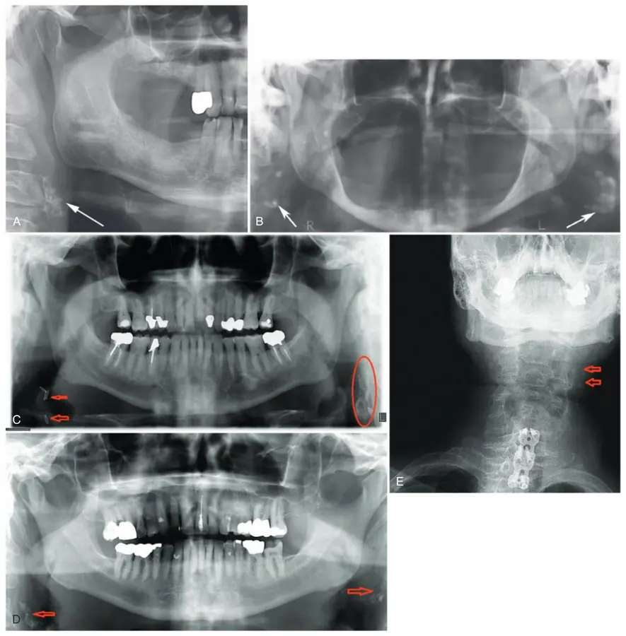
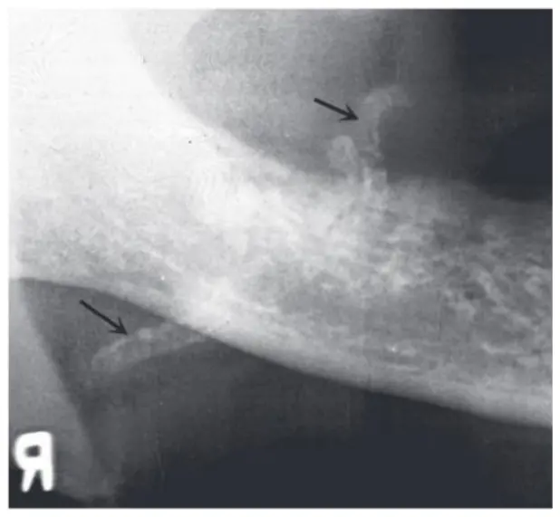

نسخه استخراجشده؛ ترجمه یا تأیید علمی انجام نشده است. وضعیت: captured
در میان همهی کلسیفیکاسیونهای بافت نرم که روی پانورامیک میبینی، این یکی میتواند جان بیمار را نجات دهد: «پلاک آتروماتوی تنگکننده در عروق کاروتید خارججمجمهای، منبع اصلی بیماری آمبولیک و انسدادی عروق مغزی است.»

و سازوکارش: «کلسیفیکاسیون دیستروفیک میتواند در سیر تکامل پلاک، درون لایهی اینتیمای رگ درگیر پدید آید.» و خودِ آترواسکلروز «در نتیجهی افزایش آسیب اندوتلیال از نیروهای برشی در محل دوشاخه شدن شریان» رخ میدهد.
و حالا مهمترین مهارت این درس — دانستن اینکه کجا را نگاه کنی: «وقتی کلسیفیکاسیون رخ داده باشد، میتواند روی پانورامیک در بافتهای نرم گردن دیده شود، بالاتر یا پایینتر از شاخ بزرگ استخوان هیوئید — جایی که کاروتید مشترک به کاروتید خارجی و داخلی دوشاخه میشود — و مجاور مهرههای سوم و چهارم گردنی یا فضای بینمهرهای میان آنها.»
و سه ویژگی ظاهریاش:
و مهمترین اشتباه رایج در این ناحیه: «غضروف تریتیشس کلسیفیه و شاخ فوقانی غضروف تیروئید میتوانند با پلاک آتروماتو اشتباه گرفته شوند — هرچند اندازه، شکل و محل یکنواخت اسکلت غضروفی حنجرهی کلسیفیه، آنها را بهعنوان آناتومی طبیعی مشخص میکند.»
و مدیریت، وظیفهی توست: «بیماران با آترومای کلسیفیهی کاروتید در خطر بالاتر حادثهی عروقی مغزی هستند. ارجاع به پزشک برای سونوگرافی داپلر برای ارزیابی خطر اندیکاسیون دارد، چون این افزایش خطر میتواند قابل توجه باشد.»
و یک همراهی زیستی که چرایی را روشن میکند: «پلاکهای کلسیفیه روی پانورامیک مردان سالمند با شمار بالای نوتروفیل همراهاند. شمار بالای نوتروفیل و سایتوکاینهایی که میسازند، برای آغاز و گسترش فرایند التهابی خفیف زیربنای آتروژنز در عروق کرونر و کاروتید حیاتیاند و پیشبین قوی حوادث نامطلوب آیندهند.»
و یک توصیهی عملی برای درمان دندانپزشکی: «به همین دلیل، مشاورهی پزشکی پیش از اقدامات تهاجمی دندانپزشکی توصیه میشود.»
دومین الگوی کلسیفیکاسیون شریانی، ظاهری دارد که تشخیصش را قطعی میکند: اسکلروز کلسیفیک مدیال یا کلسینوز مدیال مونکهبرگ، «یک فرایند دژنراتیو وابسته به سن» است.

و مشخصهی بافتیاش: «قطعهقطعه شدن، دژنراسیون، و سرانجام از دست رفتن الیاف الاستیک در تونیکا مدیای شریانهای عضلانی متوسط و کوچک، و پس از آن رسوب دیستروفیک کلسیم به شکل هیدروکسیآپاتیت کریستالی.»
و تفاوت بنیادین با آتروما را همینجا قفل کن: آتروما در اینتیما رسوب میکند و شریان را تنگ میکند؛ کلسینوز مدیال در مدیا رسوب میکند و دیواره را سفت میکند.
و ظاهر تصویریاش پاتوگنومونیک است: «رسوبات کلسیفیک در دیوارهی شریان، خطنمای خود شریان را ترسیم میکنند. نمای جانبی شریان میتواند یک جفت خط رادیواوپک نازک و موازی نشان دهد. مسیر این خطوط میتواند مستقیم باشد، که «لولهی پیپ» یا «ریل قطار» توصیف میشود، و پاتوگنومونیک کلسینوز مدیال است.» و در مقطع عرضی، شریان کلسیفیه الگویی خوشمرز، دایرهای یا حلقهمانند دارد.
و ساختار داخلی؟ هیچ. «هیچ ساختار داخلی وجود ندارد، چون رسوبات کلسیم منتشر و ریز تنها در دیوارهی مدیال رگ رخ میدهند.» — و همین، آن را از پلاک آترومی با حفرههای رادیولوسنت داخلی جدا میکند.
و محلش در سر و گردن: «کلسینوز مدیال بیشتر شریان فاسیال را درگیر میکند، ولی میتواند شریانهای ماگزیلاری و اینفرااوربیتال را هم درگیر کند.»
و اهمیت سیستمیکش — همان چیزی که باعث میشود این درس اول بیاید: «کلسینوز مدیال مونکهبرگ یافتهای پنهان در بزرگسالان میانسال و سالمند است. کلسیفیکاسیونهای عروقی یک نشانگر مستقل خطر قلبی-عروقیاند و اغلب پیشدرآمد بیماریهایی مانند دیابت شیرین و هایپرپاراتیروئیدیسماند.»
و پیامدهای بالینیاش: بیشتر بیماران در آغاز بیعلامتاند، «هرچند افزایش فشار خون و کاهش انطباقپذیری شریانی میتوانند به بیماری انسدادی شریان محیطی و در پی آن نارسایی عروقی، قطع عضو زیر زانو، یا مرگ ناگهانی قلبی» بینجامند.
و یک نکتهی افتراقی بالینی: «از نظر بالینی، هایپرپاراتیروئیدیسم باید در نظر گرفته شود، چون اسکلروز کلسیفیک مدیال اغلب بهعنوان یک کلسیفیکاسیون متاستاتیک در بیماران با این وضعیت پدید میآید.»
و مدیریت، دوباره وظیفهی توست: «دندانپزشکان باید نسبت به ویژگیهای رادیوگرافیک کلسینوز مدیال هشیار باشند، بهویژه در جمعیت سالمندشان. ارجاع فوری به پزشک برای ارزیابی جامع اندیکاسیون دارد تا علت شناسایی و راهبردهای کاهش خطر برقرار شود.»
و سه نکتهی عملی برای همهی کلسیفیکاسیونهای این یونیت: موجودیتهای رادیواوپک بافت نرم شایعاند و در حدود ۴٪ پانورامیکها دیده میشوند. چون برخی کممعدنیاند، هنگام مرور تصویر نور محیط را به کمترین برسان، از بزرگنمایی استفاده کن و فیلتر و کنتراست را تنظیم کن. و CBCT یا MDCT محل دقیق را بدون بزرگنمایی، اعوجاج یا همپوشانی نشان میدهند، به بهای دوز پرتو و هزینهی بیشتر.